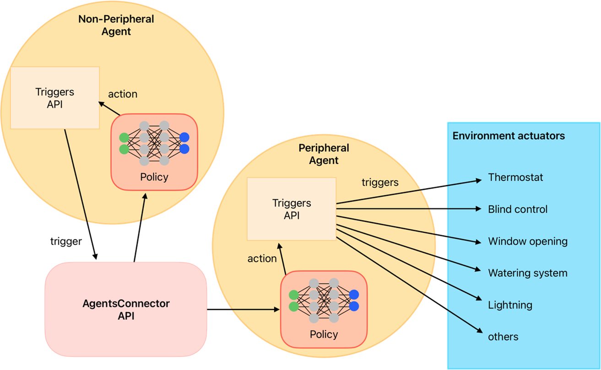

ActionMapper API#
Introduction#
In eprllib, ActionMappers determine how the policy actions are executed into EnergyPlus actuators. They
provide a mechanism to control the timing of actions, allowing for more complex and nuanced agent behavior. This
document provides a detailed explanation of the ActionMapper API in eprllib.
{kind=link}

Figure 1: Schematic representation of the action mapper function.#
Creating custom ActionMapper functions#
ActionMapper functions are responsible for determining how the policy actions are executed into EnergyPlus actuators.
To define a custom ActionMapper function, you need to follow these steps:
Override the
setup(self)method.Override the
get_action_space_dim(self)method.Override the
actuator_names(self, actuators_config: Dict[str, Tuple[str,str,str]])method.Override the
_agent_to_actuator_action(self, action: Any, actuators: List[str])method.Optionally, you can override the methods
get_actuator_action(self, action: float | int, actuator: str)andaction_to_goal(self, action: int | float).
Note
Use the decorator override in each method.``
To see a practical example, we will configurate an ActionMapper function that convert Discrete
actions to opening windows signal actuator actions.
First, we need to import all the libraries and modules that we will use in our custom ActionMapper function.
Then, we need to define the class of the ActionMapper function, which inherits from the BaseActionMapper class.
import gymnasium as gym
from typing import Any, Dict, List, Tuple, Optional
from eprllib.Agents.ActionMappers.BaseActionMapper import BaseActionMapper
from eprllib.Utils.observation_utils import get_actuator_name
from eprllib.Utils.annotations import override
class WindowsOpeningDiscreteActionMapper(BaseActionMapper):
...
Next, we need to override the setup(self) method, which is called when the ActionMapper function is initialized.
Here is recommended define the attributes that will be used in the other methods of the ActionMapper function.
For example, we can define the name of the actuator that will be controlled by the agent and the action space dimension.
@override(BaseActionMapper)
def setup(self):
# The name of the actuator that will be controlled by the agent.
# This will be obtained from the actuators_config in the environment configuration file.
self.window_actuator: Optional[str] = None
# Here we use the config dict to provide the action space dimension.
self.action_space_dim: int = self.action_mapper_config.get("action_space_dim", 11)
Note
Within the setup(self) method, you have access to the self.action_mapper_config and self.agent_name
attributes, which are defined in the environment configuration file.
The action space dimension is defined in the get_action_space_dim(self) method, which is called when
the environment is initialized and after the ActionMapper``s functions are initialized. Here, we need to
return the action space of this agent. In this example, we will use ``space.Discrete because is easy to
understand and implement, but you can use any action space that is compatible with the policy and algorithm
you are using.
@override(BaseActionMapper)
def get_action_space_dim(self) -> gym.Space[Any]:
"""
Get the action space of the environment.
Returns:
gym.Space: Action space of the environment.
"""
return gym.spaces.Discrete(self.action_space_dim)
As we need to build the environment configuration file first, and to provide a standard way to name actuators and other variables,
we will get the name of the actuator from the names defined in the action parameter of the agent_config.
As a refresh, the agent_config is defined in the environment configuration file and is used to provide the configuration of each agent.
Here a simple example of the agent_config in the environment configuration file with the actuator name defined in the action parameter:
from eprllib.Agents.AgentSpec import AgentSpec
from eprllib.Agents.ActionSpec import ActionSpec
eprllib_config.agents(
agents_config={
# Here we will configurate only one agent, but you can include more.
"Ventilation Agent": AgentSpec(
# Actuators that the agent can control.
action=ActionSpec(
actuators={
# "Custom Actuator Name": ("ep_actuator_name", "ep_actuator_type", "ep_actuator_key"),
"Window Opening Actuator": ("Schedule:Compact", "Schedule Value", "opening_ratio"),
},
),
...
),
}
)
So now, we need to override the actuator_names(self, actuators_config: Dict[str, Tuple[str,str,str]]) method,
which is called when the environment is initialized and after the ActionMapper functions are initialized.
Note
Here, we need to use the same name defined in the action parameter of the agent_config in the environment
configuration file to get the name of the actuator.
@override(BaseActionMapper)
def actuator_names(self, actuators_config: Dict[str, Tuple[str,str,str]]) -> None:
# Here the name of the actuator is obtained from the actuators_config
# in the environment configuration file.
self.window_actuator = get_actuator_name(
self.agent_name,
actuators_config["Window Opening Actuator"][0],
actuators_config["Window Opening Actuator"][1],
actuators_config["Window Opening Actuator"][2]
)
Finally, we need to override the _agent_to_actuator_action(self, action: Any, actuators: List[str]) method, which
is called when the policy action needs to be transformed into actuator actions.
@override(BaseActionMapper)
def _agent_to_actuator_action(self, action: Any, actuators: List[str]) -> Dict[str, Any]:
"""
Transform the agent action to actuator action.
Args:
action (Any): The action to be transformed.
actuators (List[str]): List of actuators controlled by the agent.
Returns:
Dict[str, Any]: Transformed actions for the actuators.
"""
return {self.window_actuator: action/10}
This and other examples of ActionMapper functions are available in the eprllib/Examples/action_mappers directory.